Agendamento de posts em redes sociais, multiusuário, num plugin WordPress. Guia completo para quem administra a plataforma e para quem publica.
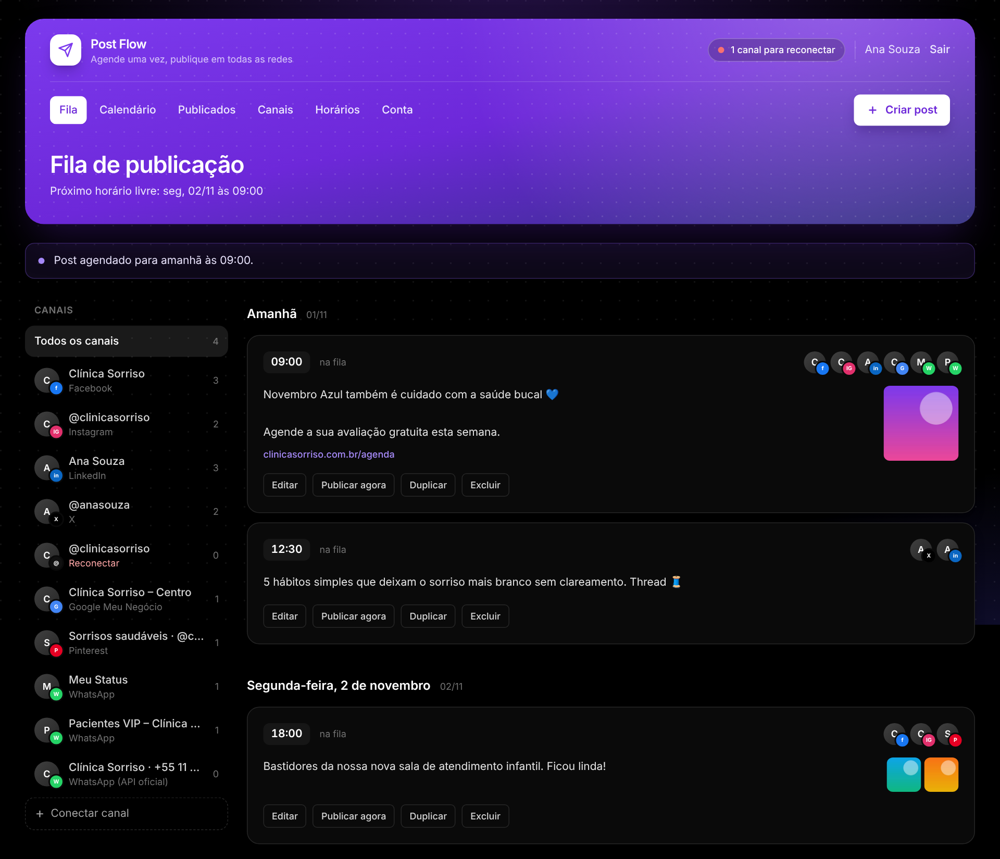
Os capítulos 2 e 3 são para quem administra a plataforma. Os capítulos 4 e 5 são para quem usa o painel no dia a dia. No PDF, clique num título para ir direto a ele.
O que o Post Flow faz e o que você precisa saber antes de começar.
O Post Flow é um plugin WordPress que transforma um site numa plataforma de agendamento de posts para redes sociais, no modelo SaaS:
[post_flow], e não no wp-admin.Tudo é publicado pelas APIs oficiais de cada rede, sem pedir senha de rede social. A única exceção é o WhatsApp por QR Code, que é opcional e está explicado na seção 3.7.
Cada post gera um envio por canal. Se um canal falhar, os outros não são afetados, e dá para tentar de novo só o que falhou.
| Rede | O que é conectado | Como conecta |
|---|---|---|
| Páginas | Login com o Facebook | |
| Perfis profissionais ligados a uma página do Facebook | Mesmo login do Facebook | |
| Perfil pessoal | Login com o LinkedIn | |
| X (Twitter) | Perfil | Login com o X |
| Threads | Perfil | Login com o Threads |
| Google Meu Negócio | Perfis da empresa (cada local é um canal) | Login com o Google |
| Pastas (cada pasta é um canal) | Login com o Pinterest | |
| WhatsApp (QR Code) | O Status e os grupos do número | Leitura de QR Code pelo celular |
| WhatsApp (API oficial) | Uma lista de contatos que autorizaram receber | Formulário com as credenciais da Meta |
Facebook, Instagram, LinkedIn, Threads, Google Meu Negócio e Pinterest. É preciso criar o app em cada rede e, para liberar a qualquer pessoa, passar pela aprovação da rede.
Tem plano gratuito com limite baixo de posts por mês. Acima disso, é preciso um plano pago da API do X.
Sem custo por mensagem. Exige um servidor próprio com a Evolution API (código aberto). É uma conexão não oficial, com risco de bloqueio do número.
A Meta cobra por mensagem de marketing. É a opção oficial, que exige modelos de mensagem aprovados.
Redes sem credenciais aparecem para os usuários como “Indisponível no momento”. Você pode começar com uma ou duas redes e ativar as outras depois.
Do servidor ao painel no ar, em cerca de 15 minutos (sem contar a criação dos apps das redes).
| Item | Exigência | Por quê |
|---|---|---|
| WordPress | 6.2 ou mais novo | Base do plugin |
| PHP | 7.4 ou mais novo, com openssl e GD ou Imagick | Criptografia dos tokens e conversão das imagens para JPG |
| HTTPS | Obrigatório | As redes só aceitam URLs de retorno em HTTPS, e o Instagram e o Threads só baixam imagens de endereços HTTPS |
| Links permanentes | Qualquer opção diferente de “Simples” | As URLs de retorno usam /wp-json/ |
| Cron | Chamada ao wp-cron.php a cada minuto | Para os posts saírem no horário (veja 2.4) |
| Plugin de SMTP recomendado | “Esqueci a senha” e troca de senha |
Use um WordPress dedicado à plataforma, por exemplo num subdomínio como app.suaempresa.com.br. Assim o painel pode ser a página inicial, e o tema do site principal não interfere.
post-flow.zip e clique em Instalar agora.[post_flow];Se o site ainda mostra os posts do blog na home, a página “Post Flow” vira automaticamente a página inicial. Se não, abra Post Flow › Configurações e clique em Usar como página inicial.
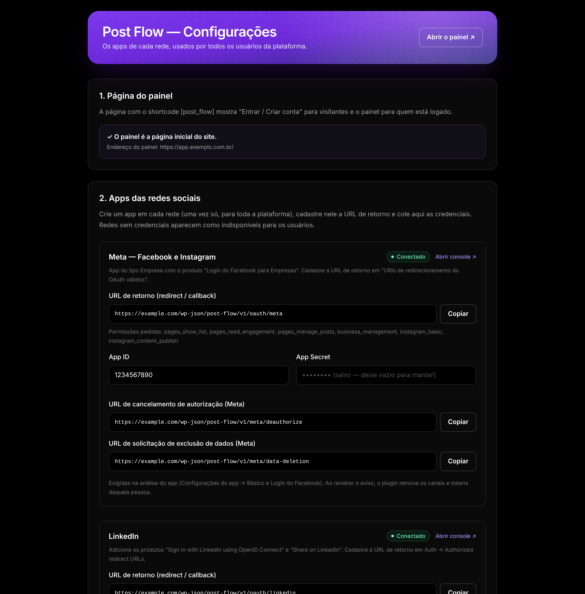
[post_flow] na página.O WordPress só executa as tarefas agendadas (WP-Cron) quando alguém visita o site. Para os posts saírem no minuto certo, crie uma tarefa no servidor (no cPanel, em Tarefas Cron) que chame o cron a cada minuto:
*/1 * * * * curl -s https://SEU-SITE/wp-cron.php?doing_wp_cron > /dev/null
Opcionalmente, adicione ao wp-config.php a linha define( 'DISABLE_WP_CRON', true );, para o cron rodar só pela tarefa do servidor. O wp-admin avisa se o WP-Cron estiver desligado.
Em sites com pouca visita, sem a tarefa do servidor, um post agendado para as 9h pode sair só quando alguém abrir o site.
A recuperação de senha usa o fluxo padrão do WordPress, que envia um link por e-mail. Instale um plugin de SMTP (por exemplo, WP Mail SMTP) com um provedor de e-mail transacional, para as mensagens não caírem no spam.
Um app por rede, criado uma vez e usado por todos os usuários da plataforma.
Para cada rede, o roteiro é sempre o mesmo:
As URLs de retorno seguem o formato https://SEU-SITE/wp-json/post-flow/v1/oauth/{rede}. As chaves secretas ficam criptografadas no banco. Para manter uma chave salva, deixe o campo vazio.
Enquanto um app não for aprovado pela rede, ele só funciona com as contas cadastradas nele (administradores, desenvolvedores e testadores). Teste com a sua conta e peça a aprovação antes de abrir para clientes.
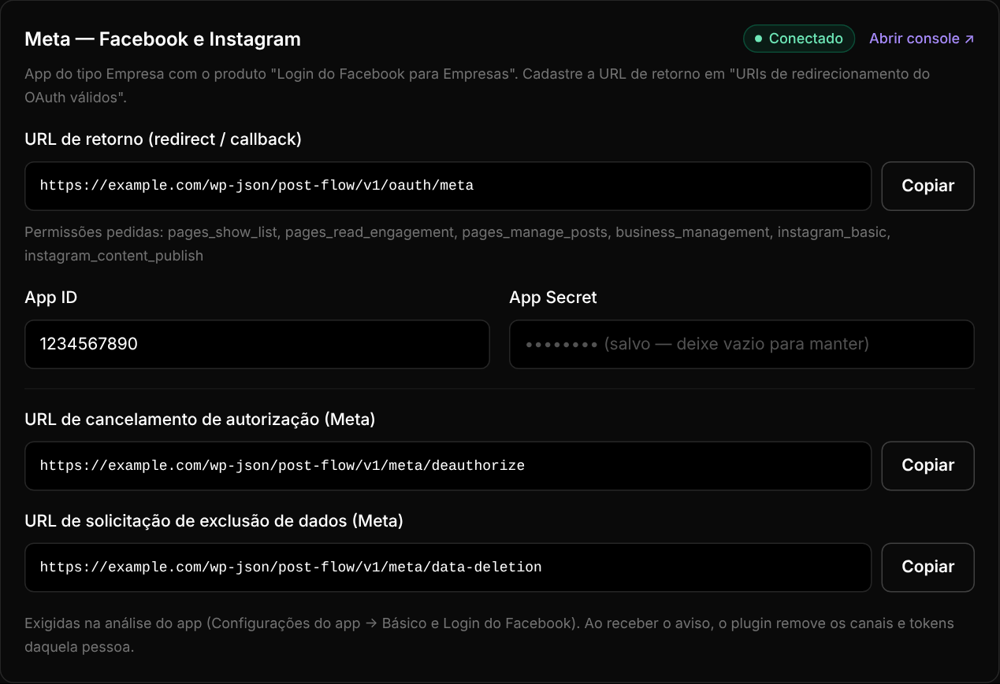
Permissões: pages_show_list, pages_read_engagement, pages_manage_posts, business_management, instagram_basic, instagram_content_publish.
O perfil do Instagram precisa ser profissional (Empresa ou Criador de conteúdo) e estar ligado a uma página do Facebook. Ao conectar, o usuário deve marcar a página e o perfil na tela da Meta.
Permissões: openid, profile, w_member_social. A conexão vale 60 dias. Sem o programa de parceiros do LinkedIn, ela não se renova sozinha: o painel avisa quando o canal precisa ser reconectado.
O plugin usa a versão 202606 da API do LinkedIn, definida em PFLOW_LINKEDIN_VERSION. O LinkedIn aposenta cada versão depois de cerca de um ano. Para atualizar, defina a constante no wp-config.php, por exemplo define( 'PFLOW_LINKEDIN_VERSION', '202706' );.
Permissões: tweet.read, tweet.write, users.read, media.write, offline.access. O token dura 2 horas e é renovado automaticamente antes de cada publicação.
O plano gratuito da API do X tem um limite baixo de posts por mês, somado entre todos os usuários da plataforma. Para volume maior, é preciso um plano pago.
Permissões: threads_basic, threads_content_publish. O token vale 60 dias e é renovado automaticamente.
Permissão: https://www.googleapis.com/auth/business.manage. Cada local vira um canal. O post sai como Novidade, com foto opcional, e o link vira o botão Saiba mais.
Permissões: boards:read, pins:read, pins:write, user_accounts:read. Cada pasta vira um canal. O token vale 30 dias e é renovado automaticamente.
Sem custo por mensagem e sem aprovação da Meta. Cada usuário conecta o próprio número lendo um QR Code no painel, como no WhatsApp Web, e publica no Status e nos grupos do número. A conexão passa por um servidor Evolution API, que é de código aberto e instalado por você.
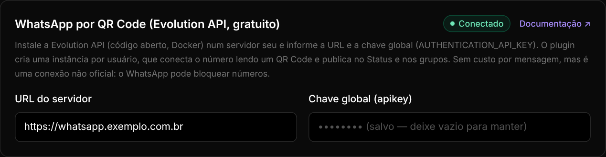
https://whatsapp.suaempresa.com.br.AUTHENTICATION_API_KEY na configuração do servidor.O plugin cria uma instância por usuário, que é apagada quando ele desconecta o número ou exclui a conta. O uso pelo usuário está na seção 4.2.
Não há nada para configurar no wp-admin: cada usuário conecta o próprio número da WhatsApp Cloud API em Canais. O WhatsApp não tem API oficial para Status nem Canais, então o post é enviado como mensagem de modelo para uma lista de contatos que autorizaram receber.
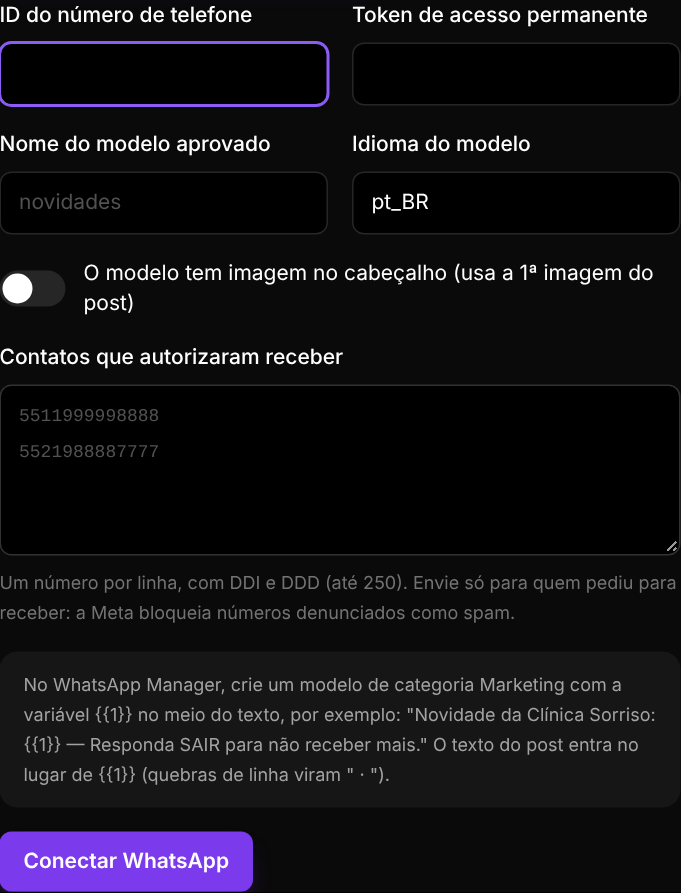
| Campo | Onde conseguir |
|---|---|
| ID do número de telefone | No app da Meta, em WhatsApp › Configuração da API |
| Token permanente | Gerenciador de Negócios › Usuários do sistema › Gerar token, com a permissão whatsapp_business_messaging |
| Nome e idioma do modelo | WhatsApp Manager › Modelos de mensagem. Use a categoria Marketing, com a variável {{1}} no meio do texto |
| Imagem no cabeçalho | Marque se o modelo tiver cabeçalho de imagem. Nesse caso, vai a 1ª imagem do post |
| Contatos | Um número por linha, com DDI e DDD (até 250 por canal) |
Exemplo de modelo: “Novidade da Clínica Sorriso: {{1}} — Responda SAIR para não receber mais.” A Meta recusa modelos que começam ou terminam com a variável. As quebras de linha do post viram “ · ”, porque variáveis de modelo não aceitam quebra de linha.
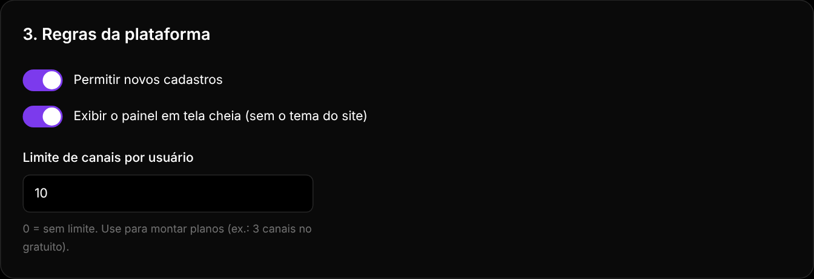
| Opção | O que faz |
|---|---|
| Permitir novos cadastros | Desligue para fechar a plataforma. Quem já tem conta continua entrando. |
| Tela cheia | Mostra o painel sem o tema do site. Desligue se quiser o painel dentro do layout do tema. |
| Limite de canais por usuário | 0 significa sem limite. Use para montar planos, por exemplo 3 canais no gratuito. |
O plugin não cobra assinaturas. Para vender planos, integre um sistema de pagamento (WooCommerce Subscriptions, Stripe etc.) e ajuste o limite de canais conforme o plano de cada cliente.
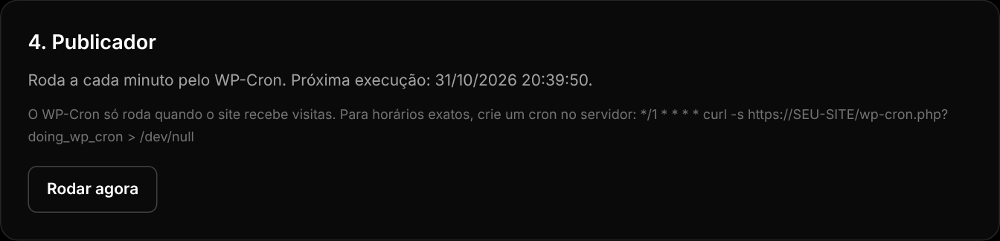
O bloco Publicador mostra a próxima execução. Rodar agora processa na hora os posts vencidos, o que é útil para conferir sem esperar o cron.
A tela Post Flow › Usuários lista cada pessoa cadastrada, com os canais por rede e os posts agendados, publicados e com falha. Para bloquear alguém, edite o usuário e troque a função ou exclua a conta. Excluir pelo wp-admin também apaga os canais, os tokens, os posts e as imagens da pessoa.
Cinco passos para começar a publicar.
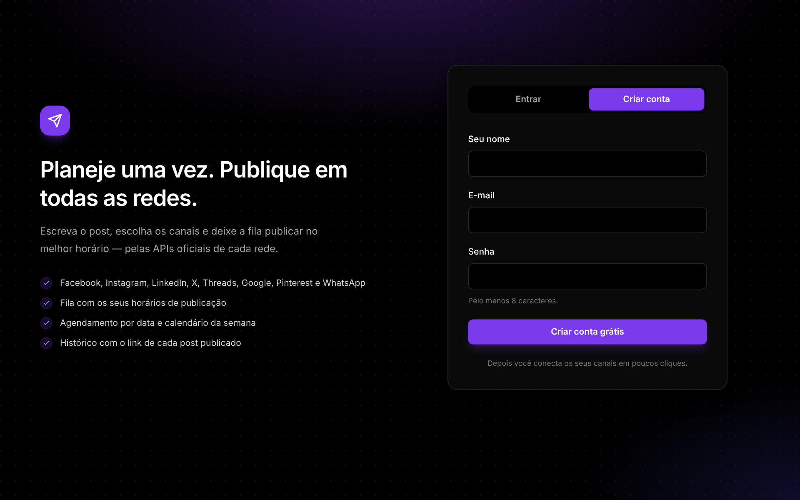
Esqueceu a senha? Na aba Entrar, clique em Esqueci a senha para receber um link por e-mail.
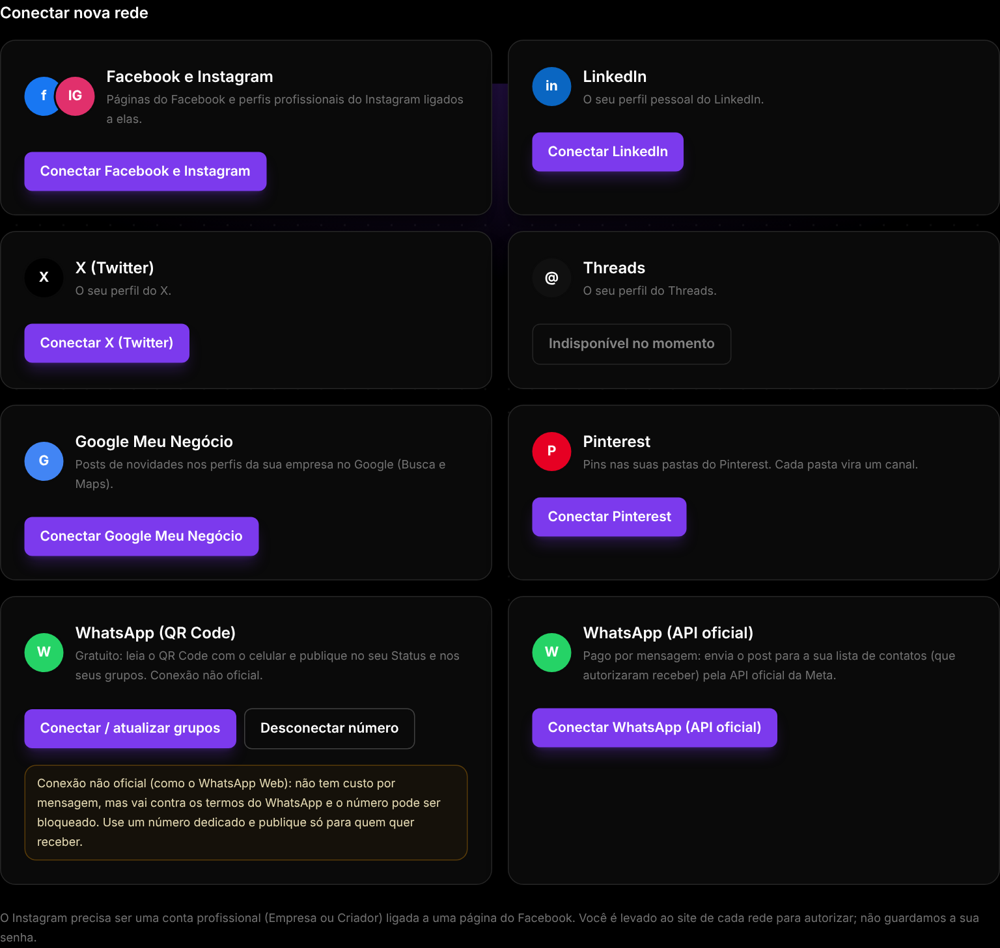
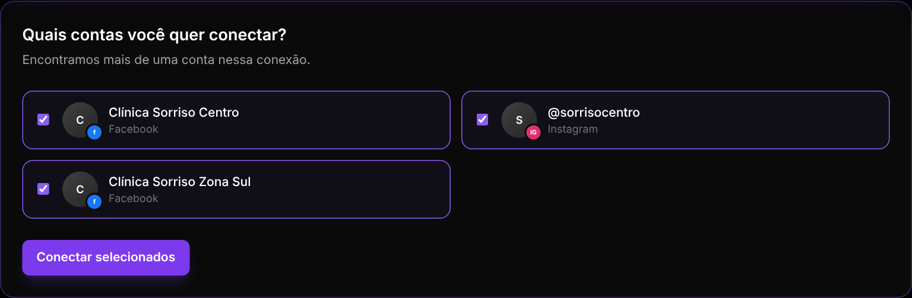
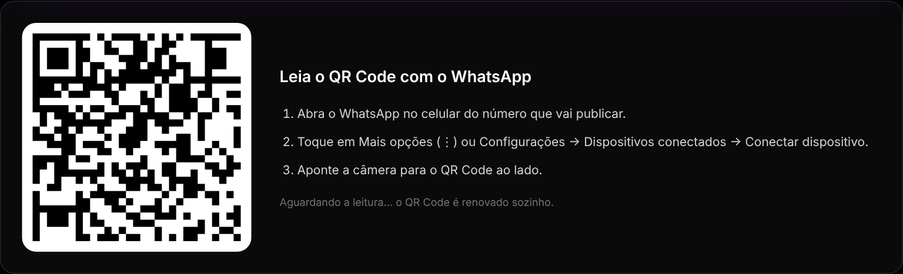
Em Horários, marque os dias da semana, adicione os horários em que quer publicar e confira o fuso horário. O botão Adicionar à fila usa sempre o próximo desses horários que estiver livre. Os horários vêm de fábrica como seg. a sex., às 09:00, 12:30 e 18:00.
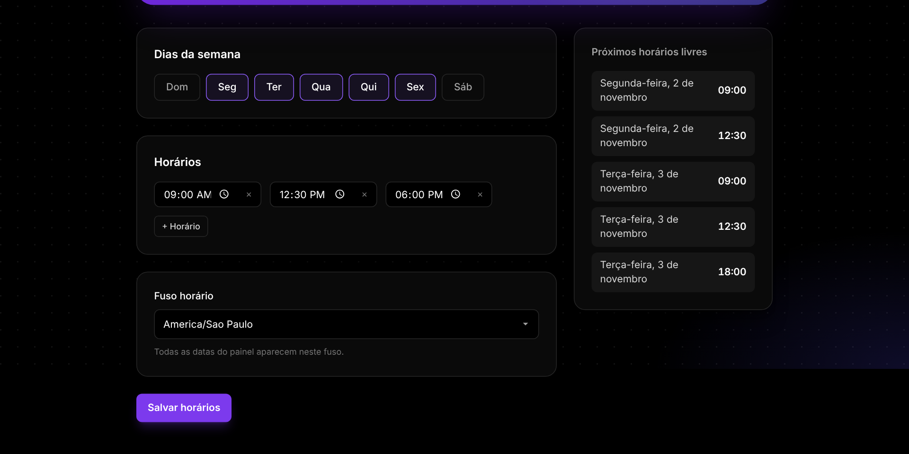
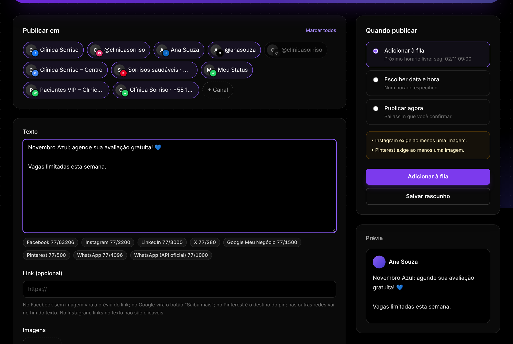
Se faltar algo (um canal, uma imagem, um horário), o post é guardado como rascunho e o editor mostra o que ajustar.
Referência de cada tela do painel e de cada botão.
O topo de todas as telas tem a marca, o resumo dos canais (com aviso quando algum precisa ser reconectado), o seu nome, Sair, o menu (Fila, Calendário, Publicados, Canais, Horários, Conta) e o botão Criar post.
| Elemento | Função |
|---|---|
| Próximo horário livre | Abaixo do título: quando sai o próximo post que for para a fila. |
| Lista de canais | Filtra a fila por canal. O número ao lado é a quantidade de posts agendados. “Reconectar” em vermelho indica um canal desconectado. |
| Horário do post | “na fila” = ocupa um horário da fila; “horário fixo” = data e hora escolhidas. |
| Editar | Abre o post no editor. Não aparece enquanto o post está sendo publicado. |
| Publicar agora | Publica na hora, em todos os canais do post. |
| Duplicar | Cria um rascunho com o mesmo conteúdo. |
| Excluir | Remove o post (pede confirmação). |
| Rascunhos | Posts guardados sem data. Ficam no fim da fila. |
| Campo | Detalhes |
|---|---|
| Publicar em | Canais do post. Canais desconectados aparecem apagados e não podem ser marcados. Marcar todos seleciona todos os ativos. |
| Texto | Um texto para todas as redes. Os contadores mostram o uso de cada rede marcada (veja 6.1). |
| Link (opcional) | No Facebook sem imagem, vira a prévia do link. No Google, vira o botão “Saiba mais”. No Pinterest, é o destino do pin. Nas outras redes, vai no fim do texto. |
| Imagens | JPG, PNG, WebP ou GIF, até 8 MB cada. São convertidas para JPG, o formato que todas as redes aceitam. Clique numa imagem já enviada para removê-la. |
| Adicionar à fila | Usa o próximo horário livre. Ao editar um post que já estava na fila, mantém o horário dele. |
| Escolher data e hora | Data e hora no seu fuso horário (mostrado abaixo dos campos). |
| Publicar agora | Pede confirmação e publica na hora. Você vai para Publicados, com o resultado. |
| Prévia | Mostra o texto e as imagens como vão sair. |
| Salvar rascunho | Guarda sem agendar, lembrando os canais escolhidos. |
Para usar textos diferentes por rede, crie o post, clique em Duplicar, ajuste o texto da cópia e troque os canais.
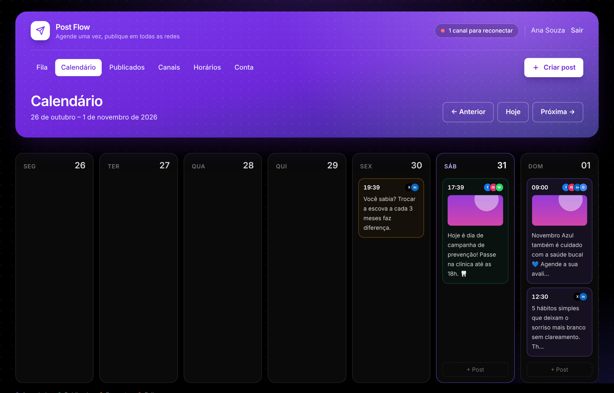
Use Anterior, Hoje e Próxima para navegar entre as semanas. As cores indicam o status: roxo: agendado verde: publicado amarelo: em parte vermelho: falhou. Clique num post agendado para editá-lo; nos já publicados, o clique abre o histórico. O botão + Post aparece nos dias de hoje em diante.
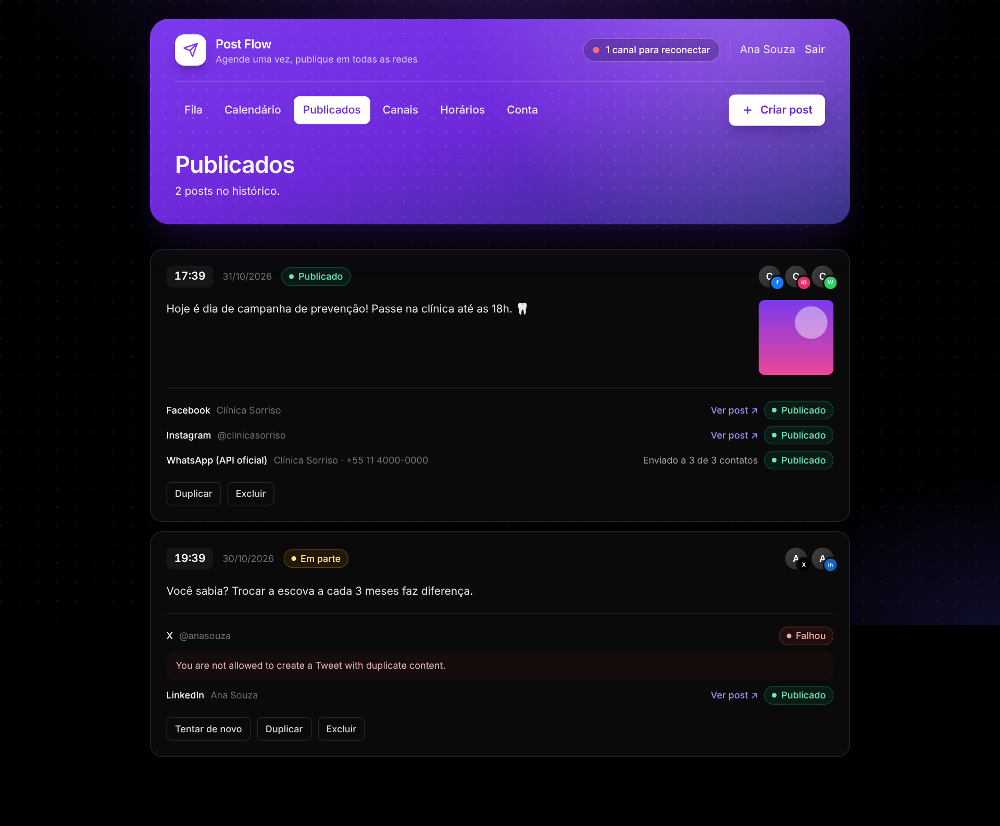
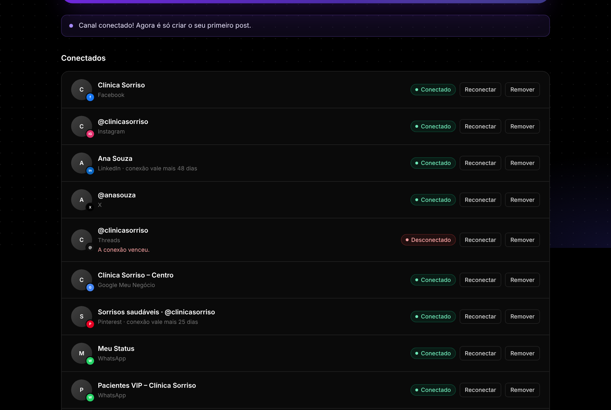
| Elemento | Função |
|---|---|
| Conectado / Desconectado | “Desconectado” significa que a autorização venceu ou foi revogada. A mensagem em vermelho explica o motivo. |
| Conexão vale mais N dias | Aparece no LinkedIn, Threads e Pinterest. Threads e Pinterest renovam sozinhos; no LinkedIn, reconecte antes do fim do prazo. |
| Reconectar | Refaz a autorização. No WhatsApp por QR, gera um novo QR Code. |
| Editar (WhatsApp oficial) | Altera o modelo, o idioma e a lista de contatos. Para manter o token, deixe o campo vazio. |
| Remover | Desconecta o canal. Ele sai dos posts que ainda não foram publicados; o histórico fica. |
| Desconectar número | No WhatsApp por QR: desliga o número e apaga a conexão do servidor. |
Dias da semana, horários (botão + Horário para adicionar e × para remover) e fuso horário. Todas as datas do painel aparecem no fuso escolhido. A coluna da direita mostra os cinco próximos horários livres. Mudar os horários não muda o horário dos posts que já estão na fila.
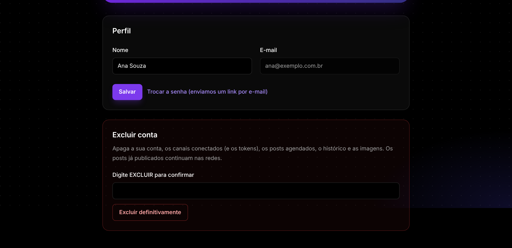
Altere o nome, peça o link de troca de senha por e-mail ou exclua a conta, digitando EXCLUIR para confirmar. A exclusão apaga a conta, os canais e tokens, os posts agendados, o histórico e as imagens. Os posts já publicados continuam nas redes.
Limites de cada rede e o que acontece por trás da fila.
| Rede | Texto | Imagens | Link | Exige |
|---|---|---|---|---|
| 63.206 | até 10 (álbum) | Prévia (sem imagem) ou no texto | Texto ou imagem | |
| 2.200 | 1 a 10 (carrossel) | No texto (não clicável) | Imagem | |
| 3.000 | até 9 | No texto | Texto ou imagem | |
| X | 280 | até 4 | No texto | Texto ou imagem |
| Threads | 500 | até 10 (carrossel) | No texto | Texto ou imagem |
| Google Meu Negócio | 1.500 | 0 ou 1 | Botão “Saiba mais” | Texto |
| 500 | 1 a 5 | Destino do pin | Imagem | |
| WhatsApp (QR Code) | 4.096 | 0 ou 1 | No texto | Texto ou imagem |
| WhatsApp (API oficial) | 1.000 | 0 ou 1 | No texto | Texto |
| Status | Significado |
|---|---|
| Rascunho | Guardado sem data. Não será publicado até ser agendado. |
| Agendado | Algum canal ainda vai receber o post (inclusive quando há nova tentativa marcada). |
| Publicado | Saiu em todos os canais. |
| Em parte | Saiu em alguns canais e falhou em outros. |
| Falhou | Não saiu em nenhum canal. O motivo aparece em Publicados. |
| Rede | Duração | Renovação |
|---|---|---|
| Facebook / Instagram | Não expira | Não precisa |
| X | 2 horas | Automática, antes de cada publicação |
| Google Meu Negócio | 1 hora | Automática, antes de cada publicação |
| Threads | 60 dias | Automática (manutenção diária) |
| 30 dias | Automática (manutenção diária) | |
| 60 dias | Manual: reconecte no painel (exceto apps parceiros do LinkedIn) | |
| WhatsApp (QR Code) | Enquanto o celular estiver conectado | Se desconectar, gere um novo QR Code |
| WhatsApp (API oficial) | Token permanente | Não precisa |
As situações mais comuns e o que fazer.
| Problema | Causa provável | O que fazer |
|---|---|---|
| A rede aparece como “Indisponível no momento” | O administrador ainda não cadastrou o app dessa rede | Administrador: preencher o ID e a chave em Post Flow › Configurações (capítulo 3). |
| Erro de “URL de redirecionamento” ao conectar | A URL de retorno cadastrada no app é diferente da do wp-admin | Copiar a URL com o botão Copiar e colar no app da rede, sem mudar nada (inclusive o https://). |
| “A conexão com a rede social expirou” | Demorou mais de 15 minutos para autorizar, ou abriu o link em outro navegador | Clicar em Conectar de novo e autorizar no mesmo navegador. |
| “Nenhuma página do Facebook foi liberada” | As páginas não foram marcadas na tela da Meta | Conectar de novo e marcar as páginas (e os perfis do Instagram). |
| O Instagram não aparece depois de conectar a Meta | O perfil não é profissional ou não está ligado a uma página | No Instagram, mudar para conta profissional e ligar à página do Facebook; depois, reconectar. |
| Funciona com a minha conta, mas não com a dos clientes | App em modo de desenvolvimento | Pedir a aprovação da rede (App Review, acesso Standard etc.) ou adicionar a pessoa como testadora no app. |
| Post agendado saiu atrasado | Sem a tarefa do cron no servidor | Criar a tarefa da seção 2.4. |
| “Instagram exige ao menos uma imagem” / “Pinterest exige…” | Regras da rede | Adicionar uma imagem ou desmarcar a rede. |
| Instagram recusou a imagem | Proporção fora do padrão ou imagem grande demais | Usar proporção entre 4:5 e 1,91:1 e até 8 MB. |
| X: “duplicate content” | O X não aceita o mesmo texto repetido | Mudar o texto e tentar de novo. |
| X: erro de permissão ou limite | Plano da API do X sem escrita, ou limite mensal atingido | Administrador: conferir o plano no portal do X. |
| LinkedIn ficou “Desconectado” | Os 60 dias da conexão terminaram | Clicar em Reconectar. |
| Google: erro ao conectar ou cota excedida | Acesso à Business Profile API não aprovado | Administrador: pedir o acesso no formulário do Google (seção 3.5). |
| Google: “não liberou o acesso contínuo” | O Google não enviou a autorização permanente | Remover o app em myaccount.google.com/permissions e conectar de novo. |
| Pinterest: pin não aparece para os outros | App no acesso Trial | Administrador: pedir o acesso Standard. |
| WhatsApp (QR): “O WhatsApp está desconectado” | O celular desconectou o aparelho, ficou sem internet por muito tempo ou o número foi bloqueado | Em Canais, clicar em Conectar / atualizar grupos e ler o novo QR Code. |
| WhatsApp (QR): o QR Code não aparece | Servidor Evolution API fora do ar ou URL/chave erradas | Administrador: conferir o servidor e os dados em Configurações. |
| WhatsApp (QR): um grupo novo não aparece | A lista de grupos é carregada na conexão | Clicar em Conectar / atualizar grupos. |
| WhatsApp (oficial): “Não foi possível validar o número” | ID do número ou token errados | Conferir os dados no app da Meta e gerar um token permanente novo. |
| WhatsApp (oficial): mensagem não chega | Modelo não aprovado, nome ou idioma errados, ou número sem DDI | Conferir o modelo no WhatsApp Manager e usar o formato 5511999998888. |
| “Você atingiu o limite de canais do seu plano” | Limite definido pelo administrador | Remover um canal ou pedir um plano maior. |
| Não chega o e-mail de troca de senha | Site sem SMTP configurado | Administrador: configurar um plugin de SMTP (seção 2.5). |
Como os dados são protegidos e separados entre os clientes.
wp-config.php. Para usar uma chave própria, adicione define( 'PFLOW_ENCRYPTION_KEY', 'uma-frase-longa-e-aleatória' );. Trocar essa chave exige reconectar todos os canais.| Endereço | Uso |
|---|---|
| /wp-json/post-flow/v1/oauth/meta | Retorno do login da Meta (Facebook e Instagram) |
| /wp-json/post-flow/v1/oauth/linkedin | Retorno do login do LinkedIn |
| /wp-json/post-flow/v1/oauth/x | Retorno do login do X |
| /wp-json/post-flow/v1/oauth/threads | Retorno do login do Threads |
| /wp-json/post-flow/v1/oauth/google | Retorno do login do Google |
| /wp-json/post-flow/v1/oauth/pinterest | Retorno do login do Pinterest |
| /wp-json/post-flow/v1/meta/deauthorize | Aviso da Meta quando alguém remove o app |
| /wp-json/post-flow/v1/meta/data-deletion | Pedido de exclusão de dados da Meta |
| /wp-cron.php | Cron do WordPress (chamar a cada minuto) |
Shortcode do painel: [post_flow]. Constantes opcionais do wp-config.php: PFLOW_ENCRYPTION_KEY, PFLOW_LINKEDIN_VERSION, PFLOW_GRAPH_VERSION (versão da API da Meta, padrão v23.0).
| Canal | Um lugar onde se publica: uma página do Facebook, um perfil do Instagram, uma pasta do Pinterest, um local do Google, o Status ou um grupo do WhatsApp. |
| App da rede | Cadastro feito pelo administrador no portal de desenvolvedores de cada rede, que permite à plataforma publicar em nome dos usuários. |
| URL de retorno | Endereço para onde a rede devolve o usuário depois que ele autoriza a conexão (também chamada de redirect ou callback). |
| Token | A autorização que a rede entrega para publicar. Fica criptografado e pode ter prazo de validade. |
| Fila | A sequência de horários de publicação definida pelo usuário. |
| Publicador | A rotina que roda a cada minuto e envia os posts vencidos para as redes. |
| Evolution API | Servidor de código aberto que conecta números de WhatsApp por QR Code. Usado pelo canal gratuito, não oficial. |
| Modelo de mensagem | Texto pré-aprovado pela Meta, obrigatório para enviar mensagens pela API oficial do WhatsApp fora de uma conversa recente. |
| Opt-in | A autorização da pessoa para receber mensagens. |
O código fica na pasta post-flow/ do repositório. Para instalar no site, envie só essa pasta (ou um .zip dela).
npm install npm run build:postflow # gera post-flow/assets/app.css (Tailwind) npm run test:postflow # testes de lógica e integração (PHP, sem WordPress) npm run preview:postflow # gera as telas em HTML com dados de exemplo
| Parte | Arquivo |
|---|---|
| Tabelas | includes/class-pflow-db.php |
| Integração de cada rede | includes/providers/ |
| Conexão (OAuth e escolha de contas) | includes/class-pflow-oauth.php |
| WhatsApp por QR Code | includes/class-pflow-whatsapp-web.php |
| Fila e fuso horário | includes/class-pflow-schedule.php |
| Publicador | includes/class-pflow-publisher.php |
| Painel (telas e ações) | app/ |
| wp-admin | admin/ |